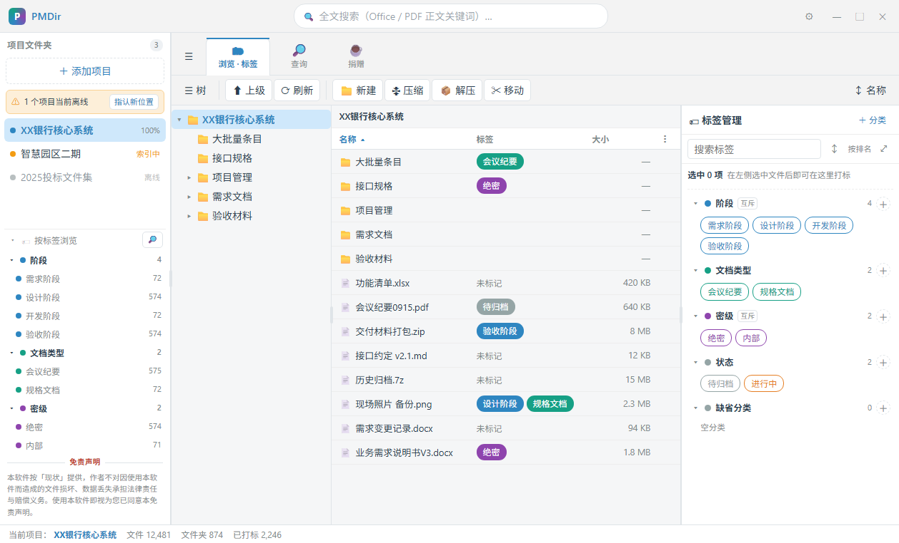
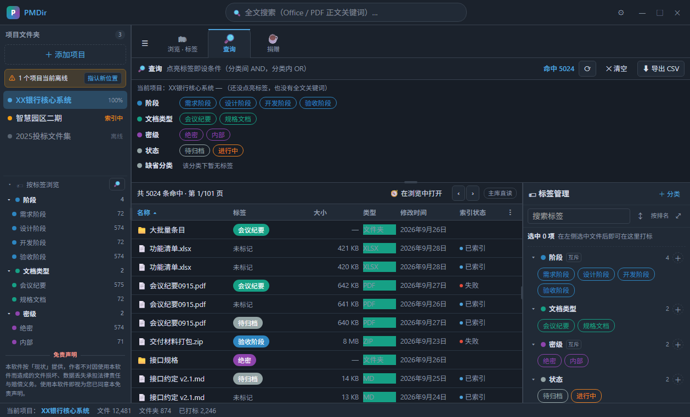
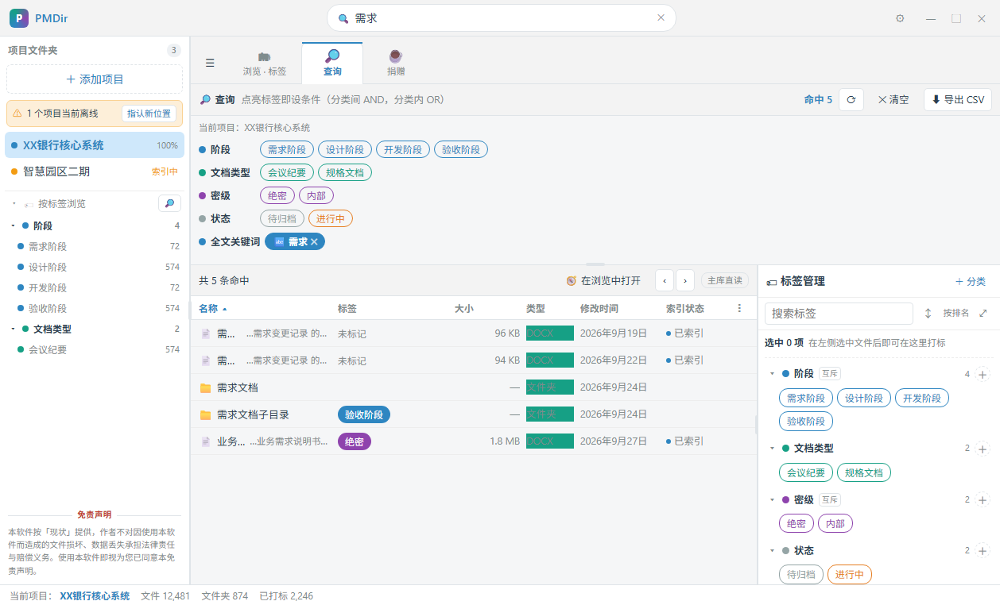
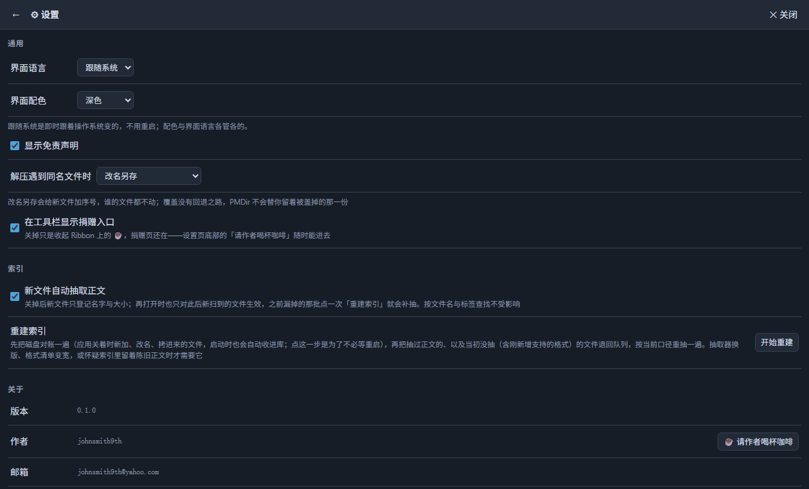
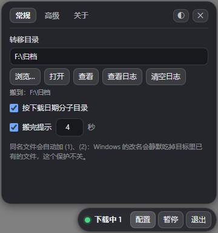
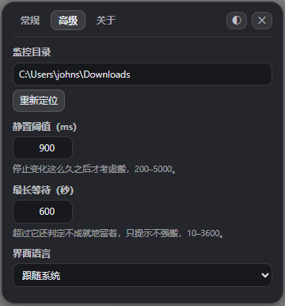

johnsmith9th
一个帮项目经理把项目文件管得住：给本地文件打上你自己的一套标签， 再到 Office 和 PDF 的正文里搜关键词。另一个替人把下载完的文件收进归档目录。 两个都是本地软件，不用注册，不联网，也不上传任何数据。

产品 01
把本地项目文件夹登记进来，在文件树上打一套只属于你的标签， 把标签条件组合成查询，再直接搜 Office 与 PDF 的正文。 全程离线：不开网络、不收集、不上传。
「索引 N%」那一栏说实话：它说的是有多少文件已经抽过正文，不是索引层的健康度； 索引层这次没能打开时，它显示的是「索引 —」。



产品 02
一条 236 × 40 的小条子盯着你的「下载」文件夹。文件下完了，它就把这个文件 搬进你指定的归档目录，可以按下载日期再分子目录。 它不是下载管理器，也不加速下载。
.crdownload .part .download
.partial .tmp .idmdownload
.__partialdownload、~$*）、大小不为 0、
且不在启动时的存量名单里。
(1)、(2)，最多到 999 ——
因为 Windows 重命名会悄悄吃掉已经存在的目标。
pending.jsonl 账本配一张纯函数重放表，
下次启动把搬了一半的文件接回去。
\Windows 与 Program Files，都拒绝。
它不做什么：它没有下载引擎，不加速、不支持 BT 或 ED2K，没有断点续传， 没有浏览器插件，没有插件系统，没有系统托盘图标，也没有安装程序和自动更新—— 发布的是解压即用的便携版。


两个软件都是免费的，功能不设任何限制。Download2 v0.1.0 已经可以直接下载了， 是一个解压即用的便携版压缩包；PMDir 还在打包和校验，下载页上写的是它的状态， 不是死链接。
这些小工具是我一个人（johnsmith9th）做的。PMDir 是给我自己 —— 以及和我一样，一份项目里塞着几百个文档、一堆文件夹和标签要管的人 —— 用的。
这是唯一的联系渠道，没有电话、没有在线聊天、没有论坛。来信我都会看。
这个站和它上面的每一页都是纯静态 HTML：没有脚本、没有 Cookie、没有分析代码， 也不加载任何远程字体、远程图片或远程脚本。页面上的截图和图标都是随本站一起存放的本地文件， 跟本站一起被下载、一起被缓存。